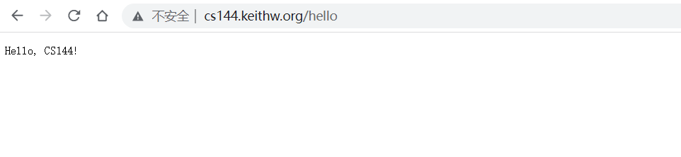
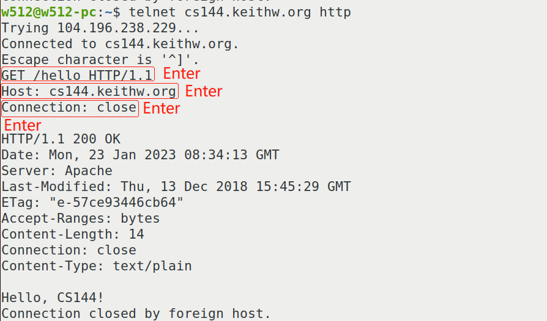
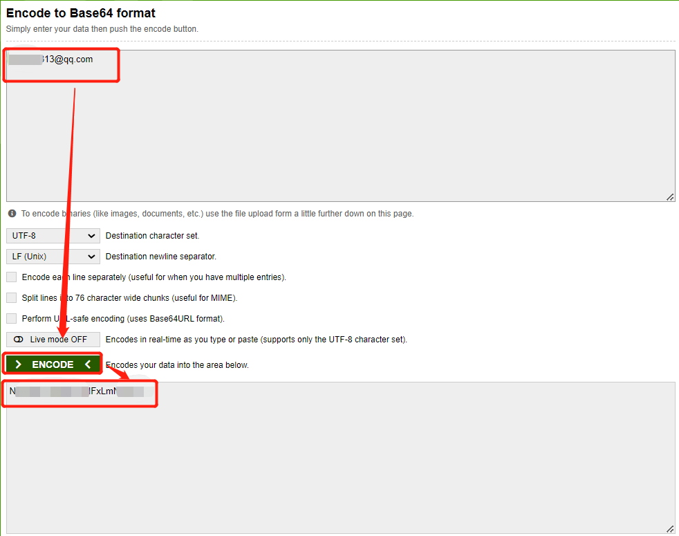
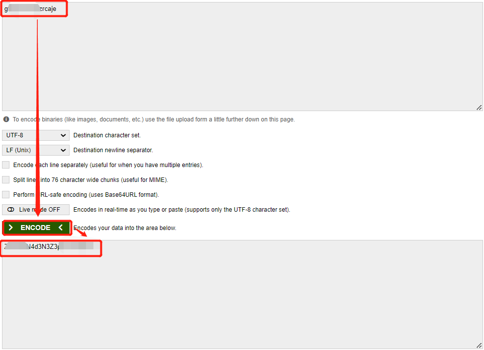
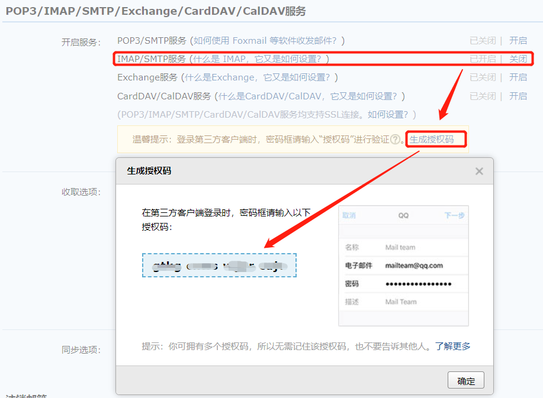
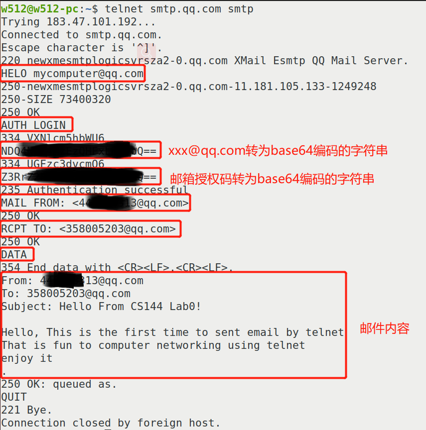
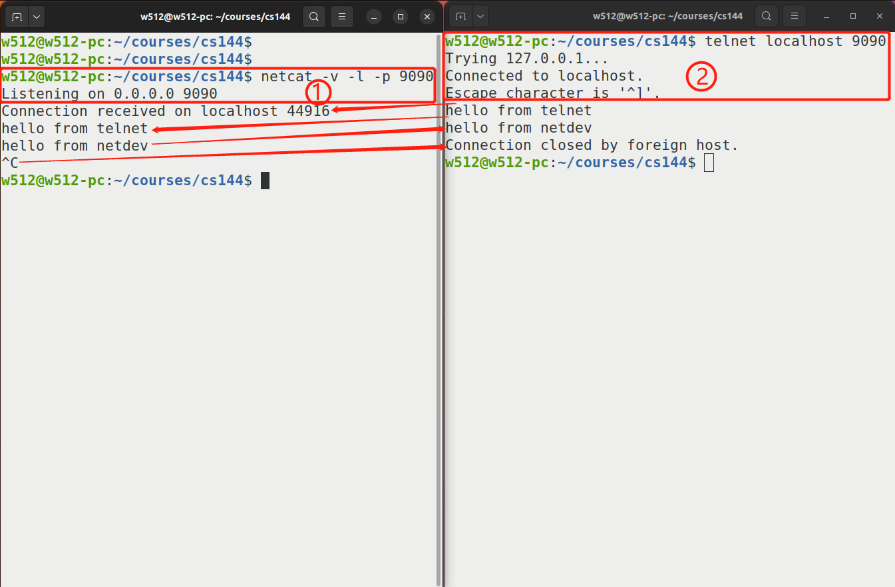

Lab0: 环境搭建
Lab0主要完成如下任务:
- 创建GNU/Linux开发环境
- 学习如何手动通过互联网完成一些任务
- 使用C++编写一段小的程序通过互联网获取Web网页
- 实现完成的关键抽象之一：写和读之间的可靠字节流（通过内存）
Info
Lab0大概需要2~6小时完成
搭建实验环境
CS144实验使用GNU/Linux操作系统， 有如下四种选择建立开发环境
-
使用提供的VirtualBox虚拟机镜像直接利用VirtualBox执行即可 虚拟机镜像文件下载地址: VM image。 具体操作参考: https://stanford.edu/class/cs144/vm_howto/vm-howto-image.html
-
创建自己的虚拟机环境 操作步骤参考: https://stanford.edu/class/cs144/vm_howto/vm-howto-image.html
-
使用自己的GNU/Linux安装版本
-
如果使用的是MacBook(使用的是ARM64 M1芯片)， 那么VirtualBox将不能成功运行， 那么需要使用UTM虚拟机软件， 同时需要使用ARM64 GNU/Linux虚拟机镜像文件，下载地址: https://web.stanford.edu/class/cs144/vm_files/arm64-cs144-vm.tar.gz
注意
由于CS144的Lab是特定于Linux的API设计的，因此不支持在任何其他操作系统上进行开发， 不过你可以自由的使用任何适合的自己的操作系统进行开发，只要提交的代码在支持的环境中可以工作即可。
手动联网
接下来开始使用网络，将通过手动完成如下两个任务:
- 获取Web网页(类似于Web浏览器)
- 发送电子邮件消息(如电子邮件客户端)
这两个任务依赖网络抽象 —— 可靠的双向字节流：
首先，你在终端输入一个字节序列， 该字节序列最终会以同样的顺序传递给另一台计算机(例如服务器)上运行的程序， 然后服务器用它自己的字节序列进行响应，并将其发回到你的终端。
获取Web网页
操作步骤如下:
-
在Web浏览器中， 输入http://cs144.keithw.org/hello, 并观察结果 
-
然后手动完成浏览器做的事情 在GNU/Linux系统中，运行如下命令
telnet cs144.keithw.org http该命令是告诉
telnet程序在你的计算机和另一个计算机(名称为cs144.keithw.org)打开一个可靠的字节流，以及使用在另一台计算机上运行特定的服务 —— http服务。 http是Hyper-Text Transfer Protocol的缩写，超文本标记传输协议，万维网使用的协议。接着输入如下信息获取Web网页 
GET /hello HTTP/1.1: 告诉服务器端URL的路径部分("/hello")Host: cs144.keithw.org: 告诉服务器URL的主机部分("cs144.keithw.org")Connection: close: 告诉服务器完成响应后立即关闭连接
发一份电子邮件
由于课程实验文档中使用的是斯坦福校内的邮箱服务器，外网无法访问，因此选择了QQ邮箱来完成该实验。 整个操作流程会比实验文档中说明的流程复杂一点。
telnet登录QQ邮箱， 在登陆时需要提供账号和校验码的Base64编码， 因此需要先转为base64编码的字符串，可通过如下网站在线进行转换, https://www.base64encode.org/


首先，获取QQ邮箱授权码，如下图所示

完整的通过telnet发送email的操作流程如下图所示

监听和连接

netcat -v -l -p 9090: 表示运行服务器端程序，
telnet localhost 9090: 表示客户端程序
当客户端连接上服务器端后，在服务器端则打印如下信息
Connection received on localhost 44916
然后不管是在服务器侧(netcat)还是客户端侧(telnet)输入任何信息，都会在发送到另一端显示。
当在服务器侧(netcat)，输入CTRL-C后，服务器侧程序退出后， 客户端(telnet)程序也立即退出，打印如下信息
Connection closed by foreign host.
使用OS stream socket编写网络程序
通过编写一个简短的程序通过互联网获取Web网页, 根据实验要求实现get_URL接口函数即可
主要是通过OS流套接字接口实现字节流读写。
代码实现如下
1 2 3 4 5 6 7 8 9 10 11 12 13 14 15 16 17 18 19 20 21 22 23 24 25 26 | |
执行结果如下
cs144@cs144vm:~/cs144/sponge/build$ ./apps/webget cs144.keithw.org /hello
HTTP/1.1 200 OK
Date: Tue, 24 Jan 2023 07:39:24 GMT
Server: Apache
Last-Modified: Thu, 13 Dec 2018 15:45:29 GMT
ETag: "e-57ce93446cb64"
Accept-Ranges: bytes
Content-Length: 14
Content-Type: text/plain
Hello, CS144!